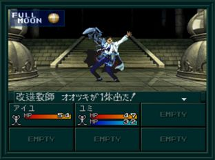
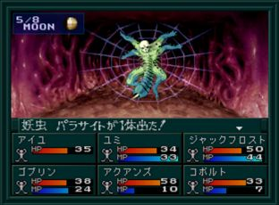

- 시설
- 공략
- BOSS:개조교사 오오츠키1
- BOSS:요충 패러사이트
시설
- B2F : 카지노
- B3F : 무기, 방어구, 도구, 회복, 사교의 관, 운세
공략
B7F의 LABO에서
BOSS:개조교사 오오츠키1와 전투. 귀중품 미크로 플라즈마(ミクロプラズマ)를 입수.
B5F로 올라와서 동쪽 계단으로 올라간다. B4F의 떨어지는 함정으로 내려가자. 이 길을 통하면 ~B8에 갈 수 있다.
B8F에서 오카스가 밥 먹는 이벤트를 본 뒤에 조리실로 가면 '미크로 플라즈마'를 사용한다. 이것을 통해 오카스 체내에 진입.
오카스 체내 끝에서
BOSS:요충 패러사이트와 전투. 쓰러뜨리면 링을 입수한다. 이후 봉인의 문에서 링을 사용하고 나태계로 간다.
BOSS:개조교사 오오츠키1

| 이름 |
Lv18 改造教師オオツキ |
| HP |
180 |
| 마법/특기 |
体当たり／ハンマーパンチ／狙い撃ち／イナズマキック |
BOSS:요충 패러사이트

| 이름 |
Lv20 妖虫パラサイト |
| HP |
150 |
| 마법/특기 |
消化液／ニードルテイル／ワイヤーブレス／休む |
화염/빙결 마법에 약하다.